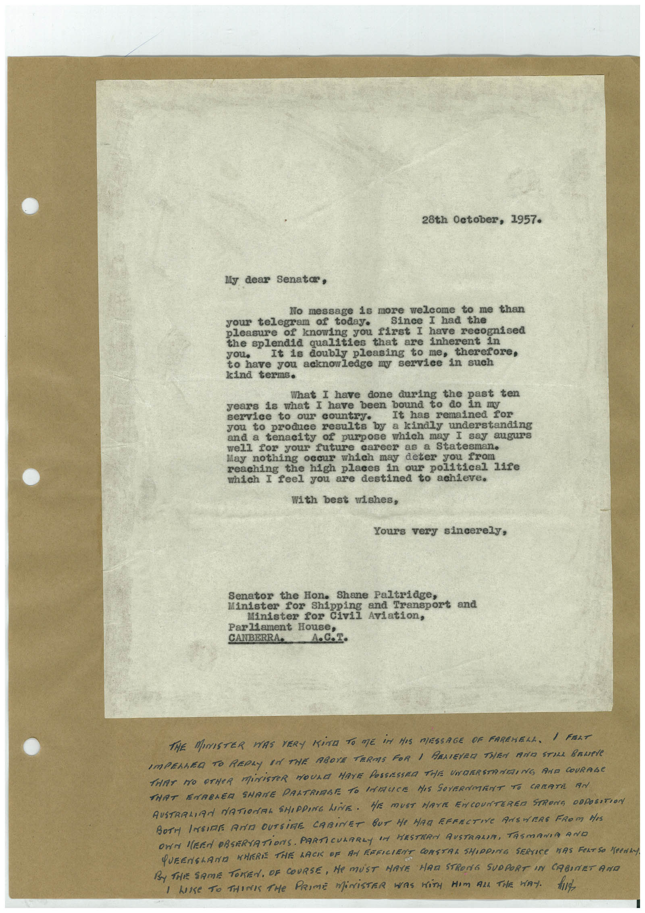

Book 1 · scan 068


Description
Transcription
Context
Review notes
Compare the machine draft with the scan. Handwriting and names need human review.
Artifacts
Edit the artifacts field in this note’s frontmatter to change these records. This summary is generated.
B01-S068-A01 — Letter & Handwritten note — Book 1, scan 068
Types: Typed document, Letter, Handwritten note
Scope: Whole scanned page; individual items can be split out during review.
Caption: Not mapped yet.
Caption source: Not recorded yet.
Caption status: unmapped
Machine transcription
28th October, 1957. My dear Senatar, No message is more welcome to me than your telegram of today. Since I had the pleasure of knowing you first I have recognised the splendid qualities that are inherent in you• It is doubly pleasing to me, therefore, to have you acknowledge my service in such kind terms. What I have done during the past ten years is what I have been bound to do in my service to our country. It has remained for you to produce results by a kindly understanding and a tenacity of purpose which may I say augurs well for your future career as a Statesman. May nothing occur which may deter you from reaching the high places in our political life which I feel you are destined to achieve. With best wishes, Yours very sincerely, Senator the Hon. Shane Paltridge, Minister for Shipping and Transport and Minister for Civil Aviation, Parliament House, CANBERRA. THE MINISTER WAS VERY KiNG TO ME iM HAS MESSAGE OF FAREHELL. I FRAT IMPELLED TO REPLY IN THE ABOVE TERMS FOR I RELIEYED THEN AND STILL BRUPe THAT NO OTHER MiNISTER WOULD HAVE POSSESSED THE UNDERSTRNEING AND COURAGE THAT ENABLER SHAME PALTRIABE TO LATALICE HIS GOVERNMENT TO CREATE AN AUSTRALIAN NATIONAL SHIPPING LINE. HE MUST HAVE ENCOUNTERER STRONG OBPOSSTION BOTH INSIDE ANTA OUTSIRE CABINET BUT He MAR EFFECTIVE ANSWERS FROM HIS OWN MERA OBSERVATIONS. PARTICULARLY IN HESTERN AUSTRALIA, TASMANIA ANO QUEENSLANE NHERE THE LACK OF AN FEFICIENT CONSTRA SHIPPING SERVICE HAS FERTiSO "Penin By THE SAME TOKEN, OF COURSE, He MUST HAVE HAR STRONG SUOPORT IN CABINET AND I LOSE TO THINK THe PRIME MiNiSTER WAS WiTH HIm AlL THE WAY. hid